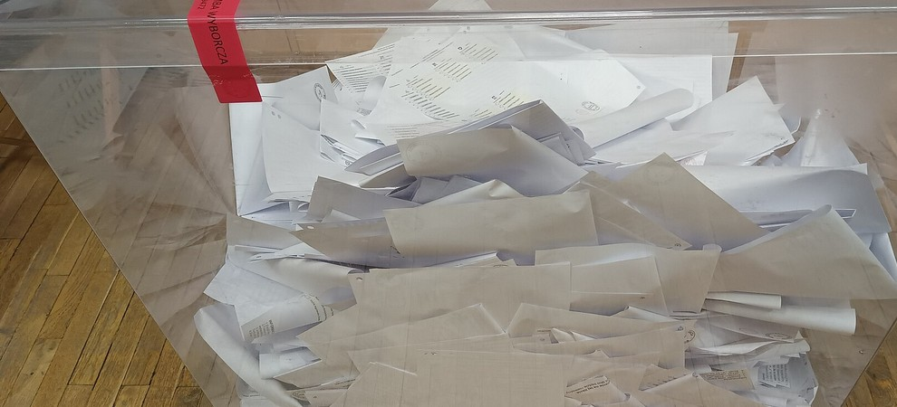

정치›선거
개표상황표 위조 의혹
국힘 “조직적 부정”
민주도 “철저 수사”
이브리프 정치부|
특검, 경기·광주시 선관위 압수수색
경기도교육감 선거 개표 둘러싼 여야 공방
경기도교육감 선거 개표 둘러싼 여야 공방
경기도교육감 선거, 광주시 초월읍 일부 투표소 결과가 뒤바뀌어 입력
경기도선관위 대국민 사과문 내고 수치 바로잡아
은닉·위조 정황 포착… 조직적 은폐 여부 수사
수치는 이미 정정돼 당선 결과와는 무관하다.
이 사태가 어디까지 이어질지 심각한 우려
조작이 있었다면 결코 용납할 수 없는 중대한 범죄

국민의힘은 재외국민 전자투표 법안까지 겨냥했다. 이번 의혹을 고리로 선관위와 여당을 향한 압박 수위를 높일 전망이다.